问题:从一段随手拍摄的单目视频重建动态物体的 360° 4D 表示。现有方法(Shape-of-Motion、MoSca、HiMoR)用 2D 点跟踪 + 深度反投影初始化高斯轨迹,但深度图只覆盖当前帧可见表面,遮挡点的 3D 位置完全无约束,导致初始几何过拟合可见表面、优化过程无法补救 —— 在偏离训练视角 >90° 的极端新视角下,即使目标区域在视频其他帧里清晰可见,重建也会失败。
方法:4DGS360 是一个无扩散(diffusion-free)框架,核心是用 3D 原生初始化替代 2D 原生初始化:提出 AnchorTAP3D(Anchor-guided Tracking Any Point in 3D),以高置信度 2D 跟踪点作为锚点(anchors)条件化 TAPIP3D 3D 跟踪器,在滑动窗口内迭代地抑制漂移,为遮挡区域也给出几何合理的 3D 轨迹;随后沿用 HiMoR 的层级运动树表示做逐场景优化。同时发布 iPhone360 基准:6 个真实场景、测试相机距训练视角 70°–135°,是首个能在真实采集条件下做 360° 单目动态重建评测的数据集。
结果:在 iPhone360 / iPhone / DAVIS 三个数据集上取得 SOTA(感知指标 CLIP-I/CLIP-T/LPIPS 为主,像素级 PSNR/SSIM 在极端外推设定下绝对值仍低,作者坦承留作未来工作)。
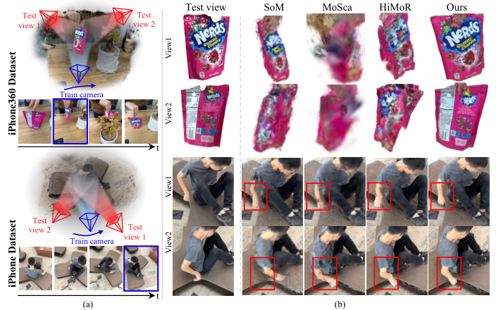
单目 4D 重建是高度病态问题:每帧只有一个视角、没有多视立体线索。Shape-of-Motion(库内笔记 SoM)开创的范式是「预训练 2D 点跟踪(TAPIR/BootsTAP)+ 单目深度反投影 → 3D 轨迹 → 初始化 canonical 高斯 + 运动基 → 光度优化」,MoSca、HiMoR 沿用同一初始化管线。本文作者指出,这条管线的失败不在优化阶段,而在初始化阶段:
2D tracks 必须经深度图 lift 到 3D;而任何单目深度(即使 LiDAR 校正过)对当前帧被遮挡的点没有读数。遮挡点的 3D 位置在初始化时是「无值」而非「有噪值」。
于是轨迹初始化只包含可见表面点,初始几何在每个时间步都过拟合训练视角可见的那一面。论文原文:「the 3D positions of occluded track points remain ambiguous, causing the initialized geometry to overfit to the visible surfaces at each timestep」。
缺失的几何在优化中不会被「长」出来;ARAP 这类刚性正则在损坏的初始化几何上反而失效(作者原话:ARAP「previously failed to operate correctly on corrupted initialized geometry in occluded regions」)。附录 0.B.2 记录了具体现象:baseline 高斯穿过遮挡区时速度突变、walk-around 场景人物下半身断裂。
为什么不用现成的 3D tracker 直接初始化?论文 §2.3 的权衡是:2D tracker(BootsTAP)在真实噪声下更鲁棒但缺乏空间理解;3D tracker(TAPIP3D、SpatialTrackerV2)有几何理解但对深度与标定误差敏感、误差随时间累积漂移。AnchorTAP3D 的赌注是:用高置信 2D 点作锚点就能把两者的优点拼起来,而且不需要任何额外训练。
输入:$T$ 帧单目视频 $\mathcal{I}=\{I_{t}\}_{t=1}^{T}$、逐帧深度图 $\mathcal{D}=\{D_{t}\}_{t=1}^{T}$(数据集传感器或预训练估计器)、相机参数 $\Theta=\{\theta_{t}\}_{t=1}^{T}$;另需前景动态物体 mask(用于过滤)与 BootsTAPIR 2D tracks(预处理产生)。输出:canonical 空间的静态 3D 高斯集合 + 层级运动树(HiMoR 式),可渲染任意时刻、360° 任意视角。
流水线两大阶段:阶段一(§5)AnchorTAP3D 3D 原生初始化 —— 2D 跟踪 + 深度反投影得候选点 → 置信度筛选为锚点 → 锚点条件化 TAPIP3D 滑窗迭代 → 全时段 3D 轨迹(含遮挡区)→ 聚类/Procrustes 得初始运动基与节点;阶段二(§7)逐场景优化 —— 在 HiMoR 层级运动表示上,用渲染损失 + ARAP 刚性正则 + 平滑族正则联合优化 canonical 高斯与运动参数。
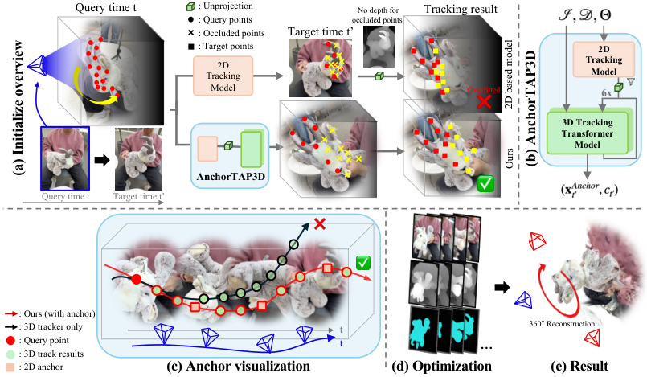
| 符号 | 含义 | 形状/取值 |
|---|---|---|
| $\mathcal{I},\mathcal{D},\Theta$ | 输入帧序列、深度图、相机参数 | 各含 $T$ 项;$I_t$ 为 $[H,W,3]$ |
| $G(\boldsymbol{\mu},\boldsymbol{\Sigma},\alpha,\mathbf{c})$ | 3D 高斯:均值/协方差/不透明度/SH 颜色系数 | $\boldsymbol{\mu}\in\mathbb{R}^3$,$\boldsymbol{\Sigma}\in\mathbb{R}^{3\times3}$,$\mathbf{c}\in\mathbb{R}^{3(l+1)^2}$ |
| $\mathbf{T}_t=[\mathbf{R}_t|\mathbf{t}_t]$ | canonical → 帧 $t$ 的 SE(3) 形变 | $\mathrm{SE}(3)$ |
| $\mathcal{M}_k,\mathbf{M}_t$ | 第 $k$ 个叶节点的运动(相对 canonical 的变换) | $\mathrm{SE}(3)$ |
| $\mathcal{B}_{m,t}$ | 兄弟节点共享的第 $m$ 条运动基 | 源码: rots $[K,T,6]$(6D 旋转)+ transls $[K,T,3]$ |
| $w_k,\ v_m$ | 高斯对 KNN 节点的插值权重;节点对运动基的系数 | 源码: 节点系数经 softmax 激活 |
| $\mathbf{p}_t,\ c_{t^{\prime}}$ | 2D query 点;2D tracker 在目标帧的置信度 | $c=v\times p$,见式(7) |
| $\tau$ | 锚点置信度阈值 | 默认 0.5(附录 0.C.1 消融) |
| $w(t,t^{\prime}),\ L$ | 滑动时间窗口及其长度 | $L=16$,相邻窗重叠 8 帧 |
| $\mathcal{X}^{A}_{w(t,t^{\prime})}$ | 窗口内锚点集合(条件化 3D tracker) | 高置信 2D 点的反投影 3D 点集 |
| $\mathbf{x}^{Anchor}_{t^{\prime}},\ v_{t^{\prime}}$ | AnchorTAP3D 输出的 3D 点与二值可见性 | $\mathbb{R}^3$, $\{0,1\}$ |
| $\mathcal{N}$ | ARAP 节点对集合 | 每节点 5 个跨帧最近节点 + 沿视线速度最相似的 2 个 |
场景用各向异性 3D 高斯 $G(\boldsymbol{\mu},\boldsymbol{\Sigma},\alpha,\mathbf{c})$ 表示。动态通过把 canonical 空间的静态高斯经 $\mathbf{T}_{t}=[\mathbf{R}_{t}|\mathbf{t}_{t}]\in\mathrm{SE}(3)$ 形变到每一帧:
形变场建模直接沿用 HiMoR(论文原文:「We model $\mathbf{T}_{t}$ following the HiMoR」):形变被编码为一棵节点树,每个 canonical 高斯的变换由其 $K$ 个最近叶子节点的运动插值得到:
每个节点的运动 $\mathbf{M}_t$ 又相对其父节点层级定义,表示为父节点共享的 $M$ 条运动基的加权和:
层级结构让高层节点捕获全局平滑运动、深层节点细化局部形变。渲染与标准 3DGS 相同:形变后高斯经相机投影(式 4)成 2D 高斯,再做深度排序 alpha 混合(式 5):
flow3d/params.py)| 组件 | 结构 | 出处 |
|---|---|---|
| 前景高斯 | canonical means/quats/scales/colors/opacities,激活:恒等/L2 归一化/exp/sigmoid/sigmoid;另有不可训练 buffer visibilities $[G,T]$ 记录逐帧可见性 | params.py:42-69 |
| MotionBasesPerLevel | rots $[N_{parent},K,T,6]$(6D 旋转)+ transls $[N_{parent},K,T,3]$,每层 $K$ 条 SE(3) 基 | params.py:166-180 |
| MotionNodesPerLevel | positions(cano 时刻)+ radius(exp 激活)+ motion_coefs(softmax,对 $K$ 条基的权重) | params.py:183-206 |
| 节点世界变换 | 局部变换 = 基加权和(6D rot 加权转旋转矩阵);世界变换沿父链连乘 | params.py:331-371 |
| 高斯形变 | 对 $k{=}3$ KNN 节点做 RBF 加权(含 radius)softmax,再用双四元数混合(DQB)作用于 canonical means/quats | params.py:374-422, scene_model.py:58-89 |
| 背景高斯 | 静态,独立 GaussianParams,带 scene_center/scene_scale 归一化 | init_utils.py:165-205 |
| 树结构(训练默认) | 两层:child_nodes_per_level=[num_init_nodes, num_nodes_second],motion_bases_per_level=[num_motion_bases, num_motion_bases_second];初始只有第 0 层,4000 步时加深(见 §7/§10) | run_training.py:269-273 |
监督信号:表示层本身无直接监督;canonical 高斯属性与运动树参数全部由 §7 的渲染系损失(光度/mask/深度/track)+ ARAP/平滑正则间接训练。
AnchorTAP3D(Anchor-guided Tracking Any Point in 3D)是一个免训练的组合式 3D 跟踪器:2D tracker 用 BootsTAP,3D tracker 用 TAPIP3D,用前者的高置信点作锚点校正后者。整体形式化(式 6):给定时刻 $t$ 的 2D query 点 $\mathbf{p}_t$,估计它在目标帧 $t^{\prime}$ 的 3D 位置与可见性:
2D tracker 预测对应点与置信度(式 7);BootsTAP 输出 occlusion logit $o$ 与 uncertainty logit $u$,换算成概率 $v=1-\sigma(o)$、$p=1-\sigma(u)$,最终置信度 $c=v\times p$:
预测点经目标帧深度与相机参数反投影为候选 3D 点(式 8);低置信(多为遮挡)点没有可靠深度,用阈值掩码剔除(式 9,默认 $\tau=0.5$):
TAPIP3D 在固定长度 $L=16$ 的滑动窗口内联合处理所有帧(相邻窗口重叠 8 帧)。每次推理时,窗口内所有高置信锚点构成集合(式 10),作为 transformer 的条件输入:
每个窗口做 6 次推理迭代:每次迭代后,若存在高置信的 2D 反投影点,就替换对应点成为新锚点,3D tracker 在下次迭代中基于更新后的锚点重新推断窗口内其余点。同时用前景动态物体 mask 剔除落在 mask 外的推断点。与「单 query 逐帧传播」的常规 3D tracker 不同,多锚点提供了跨帧的时空约束,从而抑制误差漂移。
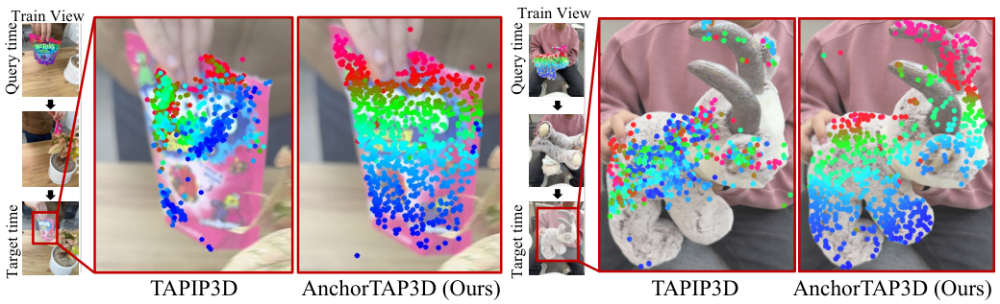
preproc/AnchorTAP3D/inference.py)| 项 | 实现 | 出处 |
|---|---|---|
| 2D track 输入 | 读 flow3d_preprocessed/2d_tracks/{scale}/{q}_{t}.npy,格式 $[P,4]=(x,y,o,u)$;visibility $=(1-\sigma(o))(1-\sigma(u))$,与论文 $c=v\times p$ 一致 | inference.py:145-161, 759-761 |
| 3D tracker | TAPIP3D,checkpoint tapip3d_final.pth;num_iters=6(与论文「6 次迭代」一致) | inference.py:232, 617, 918 |
| 关键阈值 | vis_threshold=0.9(模型内部可见性);track_vis_threshold=0.5(2D 引导采用阈值,即论文 $\tau$);depth_jump_threshold=2.0m;velocity_threshold=3.0 | inference.py:239-260 |
| query 构造 | 每个 query 帧优先用 2D track 点反投影为 3D query;--prune_query 1000 随机保留 1000 个有效深度点 | inference.py:32-93;README 示例 |
| 深度来源优先级 | 显式 --depth > DyCheck aligned_{depth_type}(默认 vda_lidar,存逆深度)> MegaSaM(默认 MoGe 模型) | inference.py:241, 330-346, 526-534 |
| 输出 | flow3d_preprocessed/anchortap3d/:track3d_{q}.npy $(T,P,4)$ xyz+vis、深度堆栈、refined_depth(3D track 投影回的稀疏深度,同像素取 max)、内外参 | inference.py:597-604, 955-1000 |
| 推理精度 | bf16 autocast | inference.py:910-926 |
运行开销:130 帧视频在 RTX A6000 48GB 上约 71 分钟(论文附录 0.A.1)。
num_fg=50000(run_training.py:61-93)。init_motion_params_with_procrustes(run_training.py:291-334),KMeans 依赖 cuML。init_velocity_node,默认关闭(init_utils.py:63-155)。run_initial_optim, run_training.py:252),Adam 学习率 rots 1e-2 / transls 3e-2 / motion_coefs 1e-2 / means 1e-3,ExponentialLR gamma=$0.1^{1/1000}$(init_utils.py:377-387)。为在非相邻帧之间保持长期几何一致与局部刚性,采用广义 As-Rigid-As-Possible 正则:对同一局部刚体簇内的节点对 $(i,j)$,约束任意两帧 $t,t^{\prime}$ 间成对距离与相对局部变换一致:
$\mathcal{N}$ 的构造(附录 0.A.3):① 每个节点跨所有帧取 5 个最近节点;② 额外选取沿视线方向速度最相似的 2 个节点 —— 保证沿同一光线对齐的节点在表示同一刚体时跨帧距离一致。「nearest node 方法权重 2.0,贯穿全部训练步」。作者在 §1 特别强调:ARAP 在之前方法的损坏初始化上会失效,换上 AnchorTAP3D 初始化后「can now function as intended」—— 初始化与正则是一对,单改任何一边都不够。
论文附录 0.A.3 给出的分项:$\mathcal{L}_{\text{rgb}}$ 内含 RGB 0.8 + D-SSIM 0.2 + LPIPS 0.01;$\mathcal{L}_{\text{mask}}$(MSE)1.0;$\mathcal{L}_{\text{depth}}$ = MSE 0.5 + 梯度平滑 1.0;$\mathcal{L}_{\text{2dtrack}}$ = 2D 坐标对齐 2.0 + 深度一致 0.1。论文未给各 $\lambda$ 外层权重的独立数值。⚠️【待核实】论文式 13 只列 5 项,但源码实际同时跑 13 项损失(含从 SoM 继承的 smooth_bases / smooth_tracks / z_accel / scale_var / radius_reg 等平滑族,见 §8 总表)—— 论文损失章是「简化叙述」,完整图景以源码为准。
max_steps=5000 归一化,trainer.py:1310-1313),其余恒定。num_epochs=600 × 每 epoch 遍历 train_loader(batch_size=8)。⚠️【待核实】max_steps=5000 名不副实:只用于 lr 衰减曲线归一化,不是训练步数上限;实际步数 = 600 × 每 epoch 批数。_deepen_motion_tree() —— 对每个第 0 层节点的邻域高斯按速度方向 KMeans 聚 5 簇生成第二层运动基、采样 10 个子节点(trainer.py:780-829, params.py:534-628)。stop_control_steps)后 RGB 损失才加 0.01×LPIPS(alex, 0.25× 下采样)(trainer.py:444-452)。论文附录把 LPIPS 写成并列项,未提及其迟启。论文附录 0.A.3 只列了 5 族损失;源码 trainer.py 实际同时优化 13 项。下表以源码为准,标注论文对应关系:
| 损失项 | 权重(源码默认) | 内容 | 论文对应 | 出处 |
|---|---|---|---|---|
| rgb_loss | w_rgb=1.0(内: 0.8·L1 + 0.2·(1−SSIM)) | 光度;step≥14000 后追加 0.01×LPIPS(alex, 0.25×) | $\mathcal{L}_{\text{rgb}}$(0.8/0.2/0.01) | trainer.py:346-454 |
| mask_loss | w_mask=1.0 | 前景 mask 对齐(有 bg 时 MSE(acc→1) + masked L1, q=0.98) | $\mathcal{L}_{\text{mask}}$ | trainer.py:456-474 |
| track_2d_loss | w_track=2.0 | 渲染 3D track 投影 vs BootsTAPIR 2D track,masked L1(q=0.98),权重 = confidence × exp(−2·帧间隔/总帧数) | $\mathcal{L}_{\text{2dtrack}}$ 的 track-2d 分量(2.0);⚠️【待核实】时间衰减因子论文未提 | trainer.py:477-516 |
| depth_loss (depth_reg) | w_depth_reg=0.5 | 渲染深度 vs AnchorTAP3D 深度,视差空间 masked L1(q=0.98) | $\mathcal{L}_{\text{depth}}$ 的 MSE 分量(0.5) | trainer.py:518-532 |
| mapped_depth_loss (depth_const) | w_depth_const=0.1 | track 3D 点投影深度 vs 目标帧深度采样,视差 masked L1(q=0.95) | $\mathcal{L}_{\text{2dtrack}}$ 的 track-depth 分量(0.1) | trainer.py:534-547 |
| depth_gradient_loss | w_depth_grad=1.0 | 视差图 x/y 梯度 masked L1(q=0.95) | $\mathcal{L}_{\text{depth}}$ 的 smoothness 分量(1.0) | trainer.py:549-557 |
| arap | w_arap=2.0 | 式 12;源码实现 = 1.0·|邻距差| + 0.5·|相对坐标变化|,每层乘 $5^{(L-1-l)}$(浅层权重大) | $\mathcal{L}_{\text{arap}}$;⚠️【待核实】层级放大因子 $5^{L-1-l}$ 论文未提 | trainer.py:589-597, loss_utils.py:198-238 |
| smooth_bases | w_smooth_bases=0.1 | 运动基 rots/transls 的 SE(3) 二阶加速度(rot×1, transl×2) | 论文未列(继承自 SoM) | trainer.py:560-566 |
| smooth_tracks | w_smooth_tracks=2.0 | 高斯中心轨迹二阶加速度 $0.5|2x_t-x_{t-1}-x_{t+1}|$ | 论文未列(继承自 SoM) | trainer.py:568-587 |
| z_accel | w_z_accel=1.0 | 沿视线方向的相邻帧位移投影平方和 | 论文未列(继承自 SoM) | trainer.py:660-662 |
| scale_var | w_scale_var=0.01 | 高斯 scales 各向方差;fg 按 visibility 加权(不可见点乘 invisible_weight) | 论文未列(继承自 SoM) | trainer.py:633-657 |
| radius_loss | w_radius_reg=1e-4 | 节点 radius 不超过 3-NN 距离(clamp 后平方) | 论文未列 | trainer.py:622-630 |
| structural_loss | w_structural=0.0(jelly 场景 0.3) | 前/后节点速度模式匹配,保持跨时间节点距离;默认关闭,仅 jelly 场景开启(start_iter=5000, patch_size=100) | 论文未提 | trainer.py:599-620, train_iphone360.sh:18-22 |
读法:论文式 13 的 5 项是「叙事压缩」—— $\mathcal{L}_{\text{rgb}}$/$\mathcal{L}_{\text{depth}}$/$\mathcal{L}_{\text{2dtrack}}$ 在源码里各拆成 2-3 个子项,另有 6 项 SoM 遗产正则未进论文。复现或与 SoM 对比时需注意:两家的优化器几乎同构,差别集中在初始化与 ARAP/structural 等几何正则的权重。
渲染本身与 3DGS 同价(光栅化一次);论文未单独报推理 FPS,⚠️【待核实】参照 SoM 同框架约 140 FPS 的量级(见 SoM 笔记 §3.3),本文未实测验证。
仓库 Jaewon040/4DGS360 是在 Shape-of-Motion 的 flow3d 代码库上改造(目录结构、trainer、loss_utils 均同源),运动表示换成 HiMoR 式运动树,预处理新增 preproc/AnchorTAP3D。环境:python 3.10 + CUDA 11.8,依赖 gsplat、fused-ssim、pytorch3d、cuml(KMeans)、lpips、nerfview(README.md + requirements.txt)。
| 类别 | 项 | 值 | 出处 |
|---|---|---|---|
| 规模 | 前景/背景高斯数 | 50,000 / 100,000 | run_training.py:61-93 |
| 运动树 | 第一层节点 / 第一层基 | 50 / 10(默认;见 10.3 的孤儿 yaml 问题) | run_training.py:61-93 |
| 运动树 | 第二层(每父)子节点 / 基 | 10 / 5,step=4000 时生成 | run_training.py:61-93, trainer.py:780-829 |
| 循环 | num_epochs × batch | 600 × 8 | run_training.py:61-93 |
| 学习率(高斯) | means/opacities/scales/quats/colors | 1.6e-4 / 1e-2 / 5e-3 / 1e-3 / 1e-2(motion_coefs 1e-2) | configs.py:5-41 |
| 学习率(运动) | bases rots/transls;节点 positions/radius/coefs | 1.6e-4;1.6e-5 / 5e-4 / 1e-2 | configs.py:5-41 |
| 密度控制 | 阈值族 | densify: xy 梯度 2e-4、scale 0.01、screen 0.05;cull: opacity 0.1、scale 0.5、screen 0.15;opacity reset 每 3000 步至 logit(0.08) | configs.py:71-97, trainer.py:943-1196 |
| 节点 densify | 两路 | 梯度驱动: step∈[2500,3500] 每 400 步,阈值 8.5e-5;高斯采样: step∈[600,1600] 每 200 步,取轨迹上离邻域最远的 10% 高斯 KNN 加权采 20 新节点 | trainer.py:770-773, 891-941, 1088-1182 |
| AnchorTAP3D | 滑窗/迭代/阈值 | L=16(重叠 8)、迭代 6、track_vis_threshold=0.5、vis_threshold=0.9、深度跳变 2m、bf16 | inference.py:232-260, 910-926 |
| 初始化优化 | 步数/学习率 | 1000 步;rots 1e-2、transls 3e-2、coefs 1e-2、means 1e-3;ExponentialLR γ=0.1^{1/1000} | run_training.py:252, init_utils.py:377-387 |
| 项 | 值 | 来源 |
|---|---|---|
| AnchorTAP3D 预处理 | 71 分钟 / 130 帧视频 | 论文附录 0.A.1(RTX A6000 48GB) |
| 单场景优化 | 约 3 小时 / 140 张图像 | 论文附录 0.A.3(同卡) |
| 显存 | 论文与 README 均未报确切占用;环境为 48GB 卡 | ⚠️【待核实】 |
| 渲染 FPS | 论文未报(与 3DGS 光栅化同价) | ⚠️【待核实】 |
| 深度依赖 | iPhone360 用估计深度(Video Depth Anything / DA-V2)+ LiDAR 尺度/偏移校正;消融显示不做校准则尺度任意(附录 Fig.13) | 论文 §4.1 / 0.C.2 |
论文附录 0.A.3 称「第一层节点 70、第二层 10、运动基 15」。仓库里确有 iphone360_base.yaml 写着 num_init_nodes: 70, num_motion_bases: 15,但全仓库无任何代码加载该文件(run_training.py:105-109 只对 nvidia 数据集加载 nvidia.yaml);iPhone360 训练脚本 train_iphone360.sh 也未传这两个参数 → 实际生效的是默认 50 节点 / 10 基(+第二层 10 子节点 / 5 基)。该 yaml 是孤儿文件。另一种善意解读:「15 基」= 两层 10+5 之和;但「70 节点」无论哪种口径都对不上默认 50。⚠️【待核实】无法排除作者实际训练时手动传参 —— 以仓库脚本为准则复现不出 70/15。
论文附录把 LPIPS 列为 $\mathcal{L}_{\text{rgb}}$ 的并列成分(0.01);源码实际是 step ≥ 14000 之后才加入(trainer.py:444-452),前期只有 0.8·L1+0.2·(1−SSIM)。
configs.py:56 默认 w_arap=2.0,行内注释 #0.1(Shape-of-Motion 原值);nvidia.yaml 覆盖为 0.01。iPhone360 用默认 2.0 —— 与论文「nearest node 权重 2.0」一致,但说明该值是从 SoM 的 0.1 调上来的,ARAP 强度放大了 20 倍,这与「好初始化让 ARAP 正常工作」的叙事互为表里。
stop_control_by_screen_steos、stop_contol_steos、start_gard_densify_steps 三个键拼错,因 update_dataclass 用 hasattr 检查(configs.py:106)而静默无效 —— 不影响 iPhone360,但暴露配置系统的脆弱性。
见 §8:论文 5 项 vs 源码 13 项,smooth_bases / smooth_tracks / z_accel / scale_var / radius_reg / structural 均未在论文出现(多为 SoM 遗产)。
CLIP-I/CLIP-T/PSNR/SSIM 都在「前景 mask 外扩 1/8 图幅的 bbox」内计算(validator.py:29-69);CLIP-T 取时间戳恰好差 5 帧的配对(validator.py:417)。跨论文比较指标时务必注意这个口径。
splits/{train,val}.json、images/{f}x/、masks/{f}x/、flow3d_preprocessed/anchortap3d/{tracks,depth,refined_depth,intrinsic,extrinsic}、2D tracks、共视 mask(iphone360_dataset.py:90-507)。相机三选一:refined(COLMAP,默认)/ original(iPhone 传感器,训练脚本实际使用)/ tapip3d。作者沿用 HiMoR 的论证:单目动态重建 + 大视角差异下,像素级指标(PSNR/SSIM)与感知质量系统性不对齐 —— 未见区域的「精确位置」本质不可预测,轻微位置偏差就会重罚像素级分数。因此主指标为感知级:LPIPS(AlexNet)、CLIP-I(GT 与渲染的 CLIP 相似度)、CLIP-T(相隔 5 帧渲染图的 CLIP 相似度,衡量时序一致);像素级 PSNR/SSIM 只在 Tab.4 附带报告。所有指标在前景 bbox(mask 外扩 1/8 图幅)内计算,全部实验 1× 分辨率。
| 数据集 | 训练相机数 | 真实采集 | 训练-测试最大角度差 | 可评测 360° |
|---|---|---|---|---|
| D-NeRF | ~150 | ✗ | – | ✗ |
| HyperNeRF | 2 | ✗ | – | ✗ |
| Nerfies | 2 | ✗ | – | ✗ |
| NSFF | 24 | ✗ | – | ✗ |
| iPhone | 1 | ✓ | <45° | ✗ |
| iPhone360(本文) | 1 | ✓ | 70°–135° | ✓ |
6 个场景:block2、goat、jacket、jelly、pull-up、walk-around(覆盖刚体、可变形体、人体运动)。goat/jelly/walk-around 为 1 训练相机 + 2 测试相机,其余为 1+1;goat/jacket/jelly/walk-around 四场景训练-测试相机始终相差 >90°。采集框架与 iPhone 数据集相同(多 iPhone 同步),深度用 LiDAR 做尺度/偏移校正,相机参数取传感器值。
| 场景 | MoSca | HiMoR | Ours | Ours vs HiMoR(ΔCLIP-I) |
|---|---|---|---|---|
| Block2 | 0.7499 / 0.9513 / 0.5556 | 0.8422 / 0.9549 / 0.3122 | 0.9021 / 0.9633 / 0.2569 | +0.0599 |
| Goat | 0.7379 / 0.9522 / 0.6332 | 0.8357 / 0.9426 / 0.3260 | 0.8706 / 0.9345 / 0.2244 | +0.0349 |
| Jacket | 0.7073 / 0.9440 / 0.5280 | 0.7041 / 0.9526 / 0.2942 | 0.9147 / 0.9445 / 0.2747 | +0.2106 |
| Jelly | 0.6239 / 0.9649 / 0.7127 | 0.6839 / 0.9357 / 0.3539 | 0.8359 / 0.9229 / 0.3538 | +0.1520 |
| Pull-up | 0.8081 / 0.9617 / 0.5241 | 0.8862 / 0.9786 / 0.2240 | 0.8978 / 0.9827 / 0.2163 | +0.0116 |
| Walk-around | 0.7323 / 0.9639 / 0.7439 | 0.8333 / 0.9590 / 0.4014 | 0.8718 / 0.9627 / 0.3938 | +0.0385 |
| 均值(本笔记按原表逐格计算) | 0.7266 | 0.7976 | 0.8822 | +0.0846(相对 +10.6%) |
逐格核对:Ours 在 Goat/Jacket/Jelly 三场景的 CLIP-T 上略低于 HiMoR(0.9345/0.9445/0.9229 vs 0.9426/0.9526/0.9357),其余各项领先。论文结论「consistently higher scores」对 CLIP-I/LPIPS 成立,CLIP-T 有 3 个场景例外 —— 本笔记按原始数值如实呈现。Δ 列为本笔记计算值。
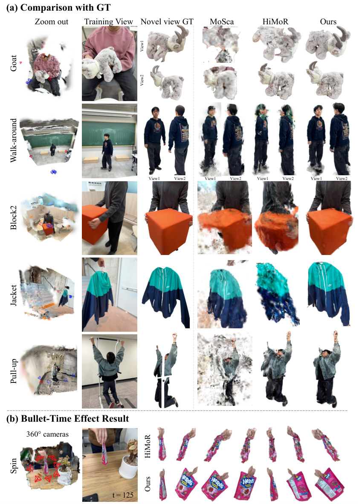
| 方法 | CLIP-I↑ | CLIP-T↑ | LPIPS↓ |
|---|---|---|---|
| T-NeRF | 0.8604 | 0.9688 | 0.5662 |
| HyperNeRF | 0.8750 | 0.9714 | 0.5261 |
| Deformable 3DGS | 0.7965 | 0.9721 | 0.7163 |
| Marbles | 0.8305 | 0.9645 | 0.6208 |
| SoM | 0.8603 | 0.9712 | 0.4827 |
| HiMoR | 0.8907 | 0.9750 | 0.4639 |
| Ours | 0.9015 | 0.9754 | 0.3877 |
五个场景(Apple/Block/Paper-windmill/Spin/Teddy)均值。注意 iPhone 数据集视角差异 <45°,baseline 普遍更有竞争力(附录 Fig.11 也承认这点),本文领先的幅度小于 iPhone360 —— 视角越大,3D 原生初始化的红利越大。
| 方法 | iPhone PSNR↑ | iPhone SSIM↑ | iPhone360 PSNR↑ | iPhone360 SSIM↑ |
|---|---|---|---|---|
| HiMoR | 16.2441 | 0.6329 | 10.9883 | 0.6854 |
| Ours | 16.3431 | 0.6309 | 11.3364 | 0.7012 |
绝对值很低(iPhone360 PSNR ≈ 11),作者明示「低绝对值反映任务本身的难度:完全外推下去未见区域做到像素级准确」。iPhone SSIM 上 Ours 略低于 HiMoR(0.6309 vs 0.6329),如实标注。
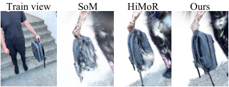
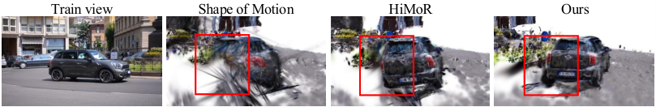
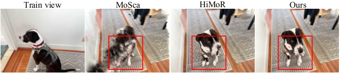
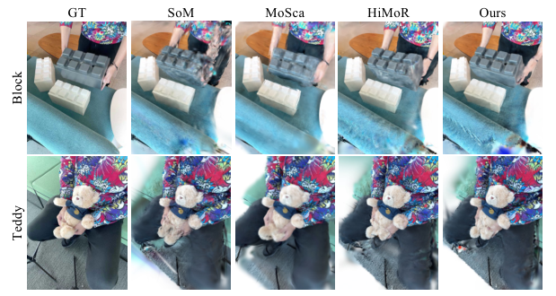
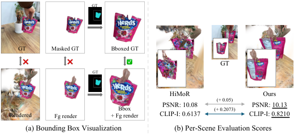
| 变体 | PSNR↑ | SSIM↑ | LPIPS↓ | CLIP-I↑ |
|---|---|---|---|---|
| w/o 3D init(直接反投影 2D tracks,即 SoM/HiMoR 路线) | 10.990 | 0.685 | 0.319 | 0.798 |
| w/o Anchor(裸 TAPIP3D 初始化) | 11.282 | 0.695 | 0.402 | 0.875 |
| Ours(AnchorTAP3D) | 11.336 | 0.701 | 0.287 | 0.882 |
定性结论(Fig.8,walk-around 与 jelly):w/o 3D init 无法保住遮挡区几何;w/o Anchor 在 walk-around 上部分恢复、在 jelly 上完全失败 —— 印证「无锚点引导时 3D 跟踪在长序列上不可靠」;Ours 两场景都保持整体形状。注意 w/o Anchor 的 LPIPS(0.402)比 w/o 3D init(0.319)还差,说明裸 3D 跟踪的漂移会感知上「更错」,锚点校正是质变关键。
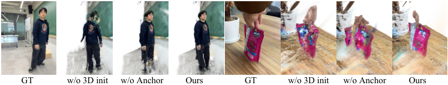
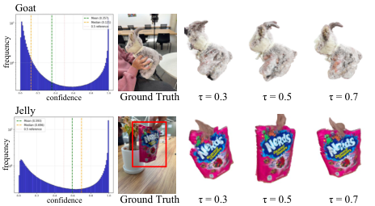
jelly 场景:用 LiDAR 校正的深度(Ours)vs 裸 MoGe-2 估计深度(w/ MoGe)。后者物体本身质量保留,但处于任意尺度、与测试相机 GT 空间不对齐。结论:深度先验的度量尺度是 360° 评测能成立的硬前提。
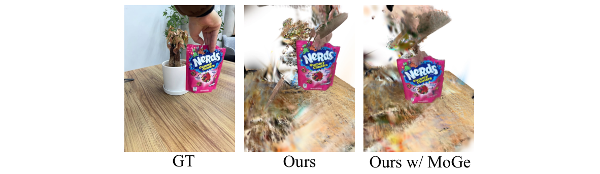
| 方法 | Jacket CLIP-I↑ | Jelly CLIP-I↑ |
|---|---|---|
| HiMoR | 0.70 | 0.68 |
| HiMoR w/ DIFIX3D+ | 0.84 | 0.72 |
| Ours | 0.92 | 0.83 |
| Ours w/ DIFIX3D+ | 0.94 | 0.85 |
本文无扩散,但与 DIFIX3D+ 组合后仍是更强的起点(几何保持更好 → 扩散修补更稳)。作者把「不可见背景合成」明确留给未来的扩散集成。
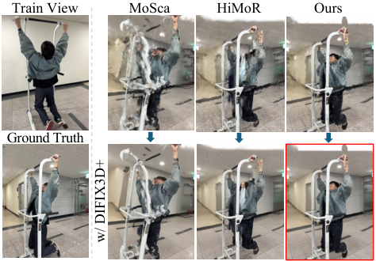
本节对比对象均为库内有独立笔记的方法:Shape-of-Motion(SoM)、Deformable-3DGS(D-3DGS)、GaVS,外加本文的两个直接 baseline MoSca 与 HiMoR(库内暂无笔记,数据取自本文论文,⚠️【待核实】其细节未经独立精读)。
| 维度 | D-3DGS(2023) | SoM(2024) | MoSca(2024) | HiMoR(2025) | 4DGS360(2026) | GaVS(2025) |
|---|---|---|---|---|---|---|
| 问题设定 | 单目动态 NVS | 单目 4D 重建 + 全程 3D 轨迹 | 单目动态 NVS(4D motion scaffold) | 单目动态 NVS(层级运动) | 单目 360° 动态物体重建 | 视频稳像(小基线渲染,非 NVS 基准) |
| 输入假设 | COLMAP 位姿+稀疏点云;不需深度/track/mask | 相机(MegaSaM/COLMAP)+ Track-Anything mask + Depth Anything + TAPIR tracks,5 个外部先验,mask 需人工点选 | 同 SoM 类先验⚠️【待核实】 | 同 SoM 类先验⚠️【待核实】 | 相机(传感器/COLMAP)+ mask + LiDAR 校正深度 + BootsTAPIR tracks;新增 AnchorTAP3D 预处理 | GLOMAP 位姿 + UniDepth + RAFT + Grounded-SAM2 + ProPainter + 陀螺仪日志 |
| 场景表示 | canonical 高斯 + 变形场 MLP(γ(x),γ(t)→Δx,Δq) | canonical 高斯 + B=10 条全局 SE(3) 运动基凸组合 | 4D motion scaffold(显式 scaffold 节点)⚠️【待核实】 | canonical 高斯 + 层级运动树 | 同 HiMoR(两层运动树,DQB 混合;继承关系见 §4) | 无全局表示:逐帧前馈独立重建(Flash3D+UniDepth),跨帧靠网络共享+空洞正则 |
| 初始化 | SfM 点云 | 2D tracks × 深度反投影(遮挡点缺失) | 同 SoM 路线⚠️【待核实】 | 同 SoM 路线 | AnchorTAP3D:3D 原生,遮挡点有推断位置 | 逐帧前馈,无初始化问题 |
| 监督信号 | 仅光度(L1+D-SSIM)+ 退火平滑 | 光度/深度/mask/2D track/平滑族(公开代码缺论文式 10 刚性损失,见 SoM 笔记 §9.3) | —⚠️【待核实】 | —⚠️【待核实】 | 13 项(光度/mask/depth/track/ARAP 2.0/平滑族,见 §8) | 动态补偿光度 + 空洞跨帧正则 + 尺度/offset 正则 |
| 训练时长 | ~30 分钟级(笔记口径) | ~2 h / 300 帧(A100) | — | — | ~3 h / 140 帧(A6000);+ AnchorTAP3D 71 min / 130 帧 | 预处理 ~13 min + 微调几分钟(455 帧,RTX 5000 Ada) |
| 推理耗时 | 实时 | ~140 FPS | — | — | 未报(与 3DGS 同价)⚠️【待核实】 | 接近实时(未报 FPS) |
| 显存 | — | 未记录 | — | — | 未报(48GB 卡)⚠️【待核实】 | 逐像素基元,高分辨率下压力大(3090 可行,具体未核实) |
| 关键指标 | D-NeRF PSNR ~29–31;iPhone 协议下 NVS mPSNR 仅 11.92(SoM 笔记复现) | iPhone mPSNR 16.72;3D EPE 0.082 | iPhone360 六场景均 CLIP-I 0.7266(本文 Tab.2,本笔记计算均值) | iPhone360 均 CLIP-I 0.7976;iPhone Mean 0.8907 | iPhone360 均 CLIP-I 0.8822;iPhone Mean 0.9015 | 稳像指标 CR 1.0 / GC-D 31.27(口径不可比) |
| 开源 | ✓(ingra14m/Deformable-3D-Gaussians) | ✓(vye16/shape-of-motion) | — | — | ✓(Jaewon040/4DGS360,代码+数据) | ✓(sinoyou/GaVS) |
| 阶段 | 代表方法 | 核心思想 | 遗留问题 |
|---|---|---|---|
| 隐式形变场 | D-NeRF → D-3DGS | canonical + MLP 变形场 | 无持久轨迹;真实单目几何崩 |
| 显式运动基 | SoM | 2D tracks → 低维 SE(3) 基凸组合 | 2D 原生初始化,遮挡区盲视 |
| 结构化运动 | MoSca(scaffold)→ HiMoR(层级树) | 运动表示结构化、层次化 | 初始化仍 2D 原生,大视角外推失败 |
| 3D 原生初始化 | 4DGS360(本文) | 2D 锚点 + 3D tracker 补全遮挡几何 | 像素级精度仍弱;背景不可见区无法合成;预处理链更长 |
| 生成式补全 | 4DGS360 + DIFIX3D+(本文 §12.4 的方向) | 好几何作扩散先验的起点 | 计算成本;跨帧一致性难利用 |
本文与主线 pipeline(COLMAP → 3DGS → 人体重建)的相关性中等偏高,但定位不同:本文是单目随意视频 → 动态物体 360° 高斯,而 vggt_human 是多视角/3DMM 驱动的人体重建。可直接借用的点:
| 资源项 | 成本 | 备注 |
|---|---|---|
| 预处理 | SoM 链(相机/mask/深度/2D tracks)+ AnchorTAP3D 71 min / 130 帧 | mask 需人工点选(Track-Anything),无法批量 |
| 训练 | ~3 h / 140 帧(A6000 48GB) | 3090 24GB 未验证,⚠️【待核实】50k fg + 100k bg 高斯 + 两层运动树,需实测 |
| 深度要求 | 度量尺度正确的深度(LiDAR 校正或等价) | 裸单目深度尺度任意,360° 评测直接不对齐 |
| 相机要求 | 传感器或 COLMAP/refined 参数 | 相机质量是硬前提(同 SoM) |
问题:iPhone360 PSNR 仅 11.34(Tab.4),作者自述「achieving pixel-level accuracy in unseen regions under full extrapolation」是任务难点。感知指标(CLIP-I)对位置偏差不敏感,容易掩盖几何错位。佐证:Tab.2 中 Ours 在 3 个场景 CLIP-T 反低于 HiMoR,说明时序稳定性并未全面胜出。建议:引入多帧一致性约束的几何精化阶段(如形变后多视角重投影一致性),或对未见区域显式建模不确定性。
问题:论文宣称的 70 节点/15 基写在 iphone360_base.yaml,但没有任何代码加载它;训练脚本不传参 → 实际跑的是 50/10。nvidia.yaml 还有 3 个拼错的键被 hasattr 静默吞掉(configs.py:106)。佐证:run_training.py:105-109、train_iphone360.sh 全文、configs.py:106。建议:配置系统改为严格校验(未知键报错);把论文超参与代码默认对齐,或在 README 显式说明实际生效值。
问题:在 SoM 的 5 个外部先验之上又加 AnchorTAP3D(自身依赖 BootsTAP + TAPIP3D + 深度模型),全链 71 min 起;τ 需按场景置信度分布调整(goat 最优 0.7 vs jelly 0.5)。佐证:附录 0.A.1、0.C.1。建议:把 τ 自动化(作者给的 $\tau \approx 1-\mathrm{ratio}(c>0.5)$ 启发式可以直接实现);或用置信度加权替代硬阈值,免除调参。
问题:前景 mask 继承 SoM 的 Track-Anything 路线,需要人工点选。佐证:README 自定义数据流程指向 SoM 预处理。建议:换 SAM2/SAM3 自动 mask 提案 + 文本提示,与 vggt_human 的 SAM3 person mask 管线对齐后可批量。
问题:iPhone360 训练深度靠 LiDAR 做尺度/偏移校正;无 LiDAR 时(裸 MoGe-2)尺度任意、与测试相机不对齐(Fig.13)。普通手机视频无 LiDAR。建议:用语义先验(人体身高、已知物体尺寸)或跨帧三角化一致性做尺度估计,替代 LiDAR。
问题:式 13 只写 5 项,源码 13 项;LPIPS 迟启(14000 步后)未提;ARAP 层级放大因子 $5^{L-1-l}$ 未提。佐证:trainer.py:346-662、configs.py:44-68。建议:复现/对比时以源码为准;后续工作引用本文损失配置应直接引代码。
| 优先级 | 改进点 | 性质 |
|---|---|---|
| 高 | 像素级精度短板 | 方法层面 |
| 高 | 孤儿 yaml / 拼写静默失效 | 工程实用性 |
| 中 | 预处理链最弱环 + τ 调参 | 工程实用性 |
| 中 | mask 人工点选 | 工程实用性 |
| 中 | LiDAR 尺度依赖 | 数据与评估 |
| 低 | 论文/源码损失不对齐 | 数据与评估(复现) |
个人最关键的三点:① 像素级精度(决定它能不能进需要几何的 pipeline,而不只是「看着好」);② 孤儿 yaml 事件(直接影响复现数字是否对得上论文);③ mask 自动化(决定能否批量处理多段人体视频)。
总结:4DGS360 把单目 4D 重建在大视角外推下的失败,精确定位到「2D 原生初始化对遮挡区的几何盲视」这一根因,并用一个免训练的组合式 3D tracker(AnchorTAP3D = BootsTAP 高置信锚点 + TAPIP3D 滑窗迭代)补齐初始化;表示层直接沿用 HiMoR 层级运动树,优化层沿用 SoM 系损失族并把 ARAP 权重上调到 2.0。在自建的 iPhone360 基准(训练-测试视角差 70°–135°)上,以 CLIP-I 为主的感知指标显著超越 MoSca/HiMoR;代价是预处理链更长(AnchorTAP3D 71 min/130 帧)+ 像素级指标依旧很弱 + 依赖 LiDAR 校正深度。
演进定位:在「D-3DGS(隐式形变场)→ SoM(2D 初始化 + 运动基)→ MoSca/HiMoR(结构化运动表示)」这条线上,4DGS360 是「初始化革命」的一步:表示不变、初始化从 2D 原生升级为 3D 原生。下一步的自然方向(作者也明示)是与扩散先验集成补全输入中从未出现的区域 —— 本文的好几何是扩散模型更好的起点(Tab.6 已验证)。
Seoul National University(首尔国立大学),通讯作者 Nojun Kwak。一作 Jae Won Jang,合作者 Yeonjin Chang、Wonsik Shin、Juhwan Cho。资助:韩国 IITP(RS-2021-II211343、RS-2025-25442338)与 COMPA(RS-2026-25537086)。